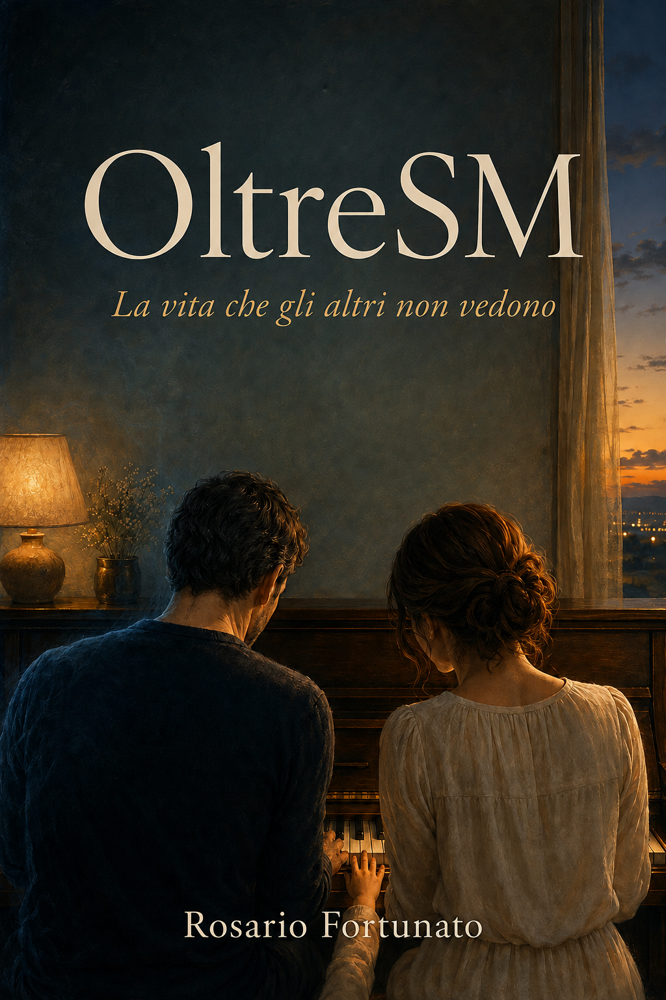

Una storia autentica
Un racconto sincero, senza filtri, nato da un’esperienza realmente vissuta.
Il libro di Rosario Fortunato
La vita che gli altri non vedono
Una storia vera sulla diagnosi, sulla paura e sulla fatica invisibile, ma soprattutto sulla persona che continua a vivere, amare e progettare il futuro.
Edizione cartacea disponibile su Amazon

Il libro
OltreSM – La vita che gli altri non vedono è una testimonianza autobiografica sulla sclerosi multipla e su tutto ciò che una malattia invisibile porta con sé: la paura, la fatica, il lavoro, la coppia, i desideri e il bisogno di essere compresi senza essere compatiti.
Rosario Fortunato racconta il percorso dai primi sintomi alla diagnosi, fino alla ricerca di un nuovo equilibrio. Non una storia di perfezione o di eroismo, ma di vita vera.
“La malattia non definisce chi siamo.”
— OltreSM
Perché leggerlo
Un racconto sincero, senza filtri, nato da un’esperienza realmente vissuta.
Per dare parole alla stanchezza, alla paura e ai sintomi che gli altri spesso non vedono.
Per ricordare che sogni, relazioni e progetti continuano a esistere anche dopo una diagnosi.
Per chi convive con una malattia cronica o invisibile, per chi gli sta accanto e per chi desidera capire davvero.
Dal capitolo “La fatica che nessuno vede”
«Come stai?» Sono soltanto due parole. Quasi sempre vengono pronunciate con affetto, cortesia o sincera preoccupazione. Eppure, da quando ho la sclerosi multipla, questa domanda mi mette in difficoltà. Mi dà persino fastidio.
Non perché non apprezzi l’interesse degli altri, ma perché spesso non so cosa rispondere. La risposta vera sarebbe troppo lunga. Dovrei spiegare come mi sento in quel preciso momento, quanto ho dormito, quanto mi fanno male le gambe, quanta energia ho già consumato e quanta me ne rimane.
Dovrei descrivere qualcosa che, a volte, non riesco a comprendere completamente neppure io.
Le parole dei lettori
“Un libro straordinariamente toccante e profondo. OltreSM – La vita che gli altri non vedono di Rosario Fortunato ti cattura fin dalla prima pagina e lascia un segno indelebile nel cuore. Consigliatissimo a chiunque cerchi una lettura emozionante e ricca di significato.”
Cliente Amazon
Acquisto verificato · 23 settembre 2026
“È un libro molto emozionante. Ti catapulta in un mondo sconosciuto e ti insegna a vedere ciò che ad occhio nudo non è possibile vedere. Ti fa capire che la sofferenza ha varie forme e che si può scegliere se soccombere ad essa o vivere. La forza dell’autore e di tante altre persone che come lui vivono qualcosa di inimmaginabile dovrebbe farci riflettere su come viviamo la vita e il vero senso che è rinchiusa in essa.”
Rossana
Recensito in Italia il 27 settembre 2026
“Conosco l'autore come collega, ma leggere "Oltre SM" mi ha emozionato e ispirato profondamente.
È il racconto autentico e coraggioso di chi scopre di avere la sclerosi multipla ma sceglie di non farsi definire dalla malattia. Uno stile diretto, privo di vittimismi e pieno di forza. Un libro che insegna ad andare oltre le difficoltà, consigliato non solo a chi vive questa realtà, ma a chiunque cerchi una grande lezione di resilienza e vita.
Consigliatissimo!”
Barbara Dimino
Acquisto verificato · 25 settembre 2026
Incontriamoci
Le prossime date saranno pubblicate qui e sul profilo Instagram @oltre.sm.
L’autore
Rosario Fortunato vive a Palermo. Dopo la diagnosi di sclerosi multipla ha scelto di trasformare la propria esperienza in una voce capace di raccontare ciò che spesso rimane invisibile.
Con OltreSM vuole ricordare che dietro ogni diagnosi esiste una persona, con sogni, paure, relazioni e progetti ancora da realizzare. Il suo messaggio è semplice: oltre la malattia c’è sempre la persona.
Segui @oltre.sm su Instagram →Disponibile ora
Acquista l’edizione cartacea di OltreSM su Amazon.
Acquista su Amazon – 12,99 €